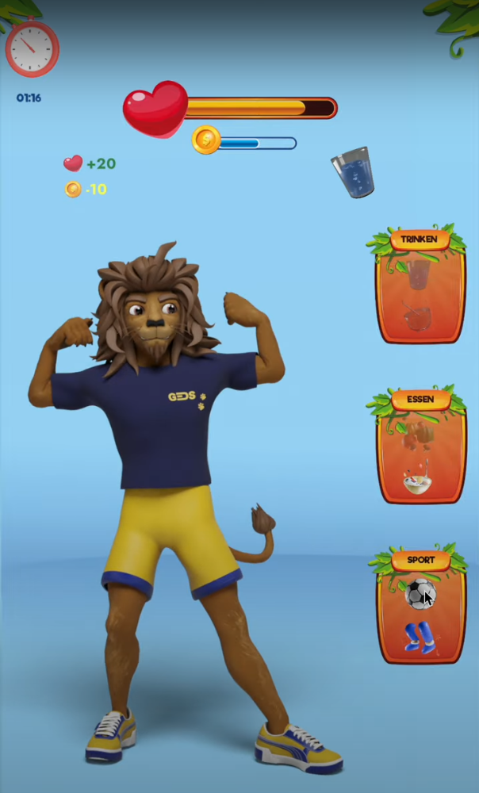
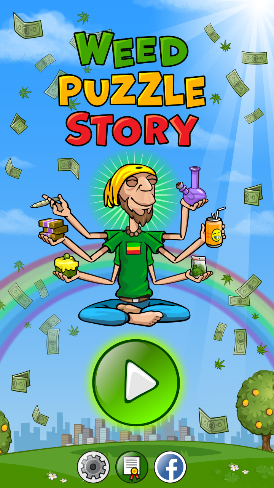
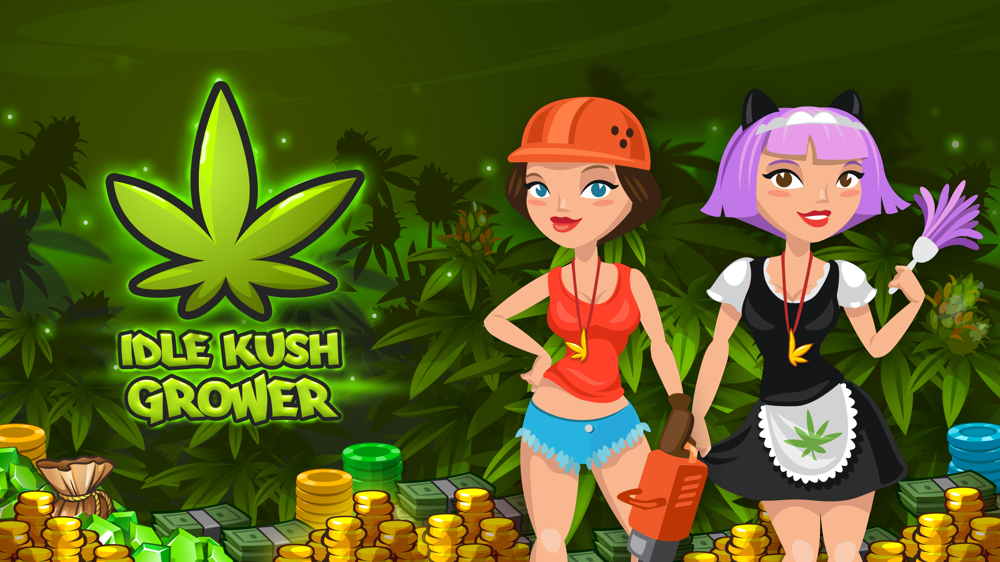

List of my projects
Tired Lion
 Watch VideoTechnical Specifications
| Project | Platform | Stack |
|---|---|---|
| Tired Lion | Android | Unity, C# |
"Tired Lion is a thrilling adventure that challenges players to think strategically while enjoying stunning graphics." - Game Reviewer
Actively contributed to the development of this game, focusing on game mechanics to ensure a smooth and engaging experience for users. Managed the seamless integration of graphics and animations, ensuring high-quality visual appeal. Took charge of bug fixing and optimization, guaranteeing a flawless release. Additionally, provided ongoing support post-launch to ensure continuous improvement and user satisfaction. Proud to have been a key player in the successful execution of this project.
Puzzle Weed Story: "Wake&Bake"
 Download on Google PlayTechnical Specifications
| Project | Platform | Stack |
|---|---|---|
| Puzzle Weed Story | Android | Unity, C#, PlayFab |
"Puzzle Weed Story combines fun gameplay with a unique theme, making it a must-play for puzzle enthusiasts!" - Game Critic
Actively contributed to the development of this game, focusing on game mechanics to ensure a smooth and engaging experience for users. Managed the seamless integration of graphics and animations, ensuring high-quality visual appeal. Took charge of bug fixing and optimization, guaranteeing a flawless release. Additionally, provided ongoing support post-launch to ensure continuous improvement and user satisfaction. Proud to have been a key player in the successful execution of this project.
Idle Kush Grower
 Download on Google PlayTechnical Specifications
| Project | Platform | Stack |
|---|---|---|
| Idle Kush Grower | Android | Unity, C#, PlayFab |
"Idle Kush Grower offers a relaxing gameplay experience that keeps players coming back for more!" - Player Feedback
Independently developed all game mechanics, ensuring smooth and engaging gameplay. Personally handled all graphics and animations, achieving high visual quality. Managed every phase from concept to final implementation, showcasing creativity and technical expertise. Proud to have taken full responsibility for the project, delivering it from start to finish.